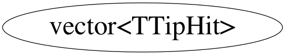

Function Members (Methods)
public:
| ~vector<TTipHit,allocator<TTipHit> >() | |
| vector<TTipHit,allocator<TTipHit> >::reference | at(vector<TTipHit,allocator<TTipHit> >::size_type n) |
| vector<TTipHit,allocator<TTipHit> >::const_reference | at(vector<TTipHit,allocator<TTipHit> >::size_type n) const |
| TTipHit& | back() |
| vector<TTipHit,allocator<TTipHit> >::iterator | begin() |
| vector<TTipHit,allocator<TTipHit> >::size_type | capacity() const |
| void | clear() |
| bool | empty() const |
| vector<TTipHit,allocator<TTipHit> >::iterator | end() |
| void | erase(vector<TTipHit,allocator<TTipHit> >::iterator position) |
| void | erase(vector<TTipHit,allocator<TTipHit> >::iterator first, vector<TTipHit,allocator<TTipHit> >::iterator last) |
| TTipHit& | front() |
| vector<TTipHit,allocator<TTipHit> >::iterator | insert(vector<TTipHit,allocator<TTipHit> >::iterator position, const TTipHit& x) |
| void | insert(vector<TTipHit,allocator<TTipHit> >::iterator position, vector<TTipHit,allocator<TTipHit> >::const_iterator first, vector<TTipHit,allocator<TTipHit> >::const_iterator last) |
| void | insert(vector<TTipHit,allocator<TTipHit> >::iterator position, vector<TTipHit,allocator<TTipHit> >::size_type n, const TTipHit& x) |
| vector<TTipHit,allocator<TTipHit> >::size_type | max_size() const |
| vector<TTipHit,allocator<TTipHit> >& | operator=(const vector<TTipHit,allocator<TTipHit> >& x) |
| vector<TTipHit,allocator<TTipHit> >::reference | operator[](vector<TTipHit,allocator<TTipHit> >::size_type n) |
| vector<TTipHit,allocator<TTipHit> >::const_reference | operator[](vector<TTipHit,allocator<TTipHit> >::size_type n) const |
| void | pop_back() |
| void | push_back(const TTipHit& x) |
| vector<TTipHit,allocator<TTipHit> >::reverse_iterator | rbegin() |
| vector<TTipHit,allocator<TTipHit> >::reverse_iterator | rend() |
| void | reserve(vector<TTipHit,allocator<TTipHit> >::size_type n) |
| void | resize(vector<TTipHit,allocator<TTipHit> >::size_type sz) |
| void | resize(vector<TTipHit,allocator<TTipHit> >::size_type sz, TTipHit c) |
| vector<TTipHit,allocator<TTipHit> >::size_type | size() const |
| void | swap(vector<TTipHit,allocator<TTipHit> >& x) |
| vector<TTipHit,allocator<TTipHit> >() | |
| vector<TTipHit,allocator<TTipHit> >(const vector<TTipHit,allocator<TTipHit> >& x) | |
| vector<TTipHit,allocator<TTipHit> >(vector<TTipHit,allocator<TTipHit> >::size_type n, const TTipHit& value = TTipHit()) | |
| vector<TTipHit,allocator<TTipHit> >(vector<TTipHit,allocator<TTipHit> >::const_iterator first, vector<TTipHit,allocator<TTipHit> >::const_iterator last) |
Class Charts



Function documentation
const_reference operator[](vector<TTipHit,allocator<TTipHit> >::size_type n) const
reference operator[](vector<TTipHit,allocator<TTipHit> >::size_type n) const
friend iterator operator+(difference_type _Off, const iterator& _Right);
reference at(vector<TTipHit,allocator<TTipHit> >::size_type n)
friend random_access_iterator_tag iterator_category(vector::reverse_iterator& x);
iterator begin(void)
iterator end(void)
reverse_iterator rbegin(void)
reverse_iterator rend(void)
size_type max_size(void)
size_type capacity(void)
bool empty(void)
T& front(void)
T& back(void)
void insert(iterator position,const_iterator first,const_iterator last)
void insert(iterator position,size_type n,const T& x)
void pop_back(void)
void erase(vector<TTipHit,allocator<TTipHit> >::iterator first, vector<TTipHit,allocator<TTipHit> >::iterator last)
void clear()